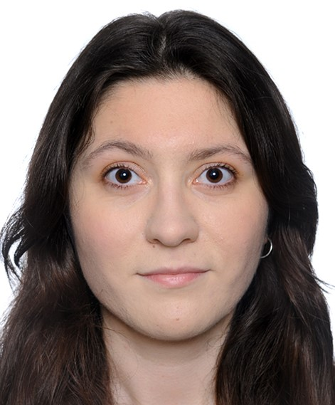

ev_044_10663_
|  | Ewa |
|||
|
Wykształcenie |
Umiejętności i predyspozycje |
Zainteresowania |
||
|
|
|
||
Moja motywacja
Nazywam się Ewa Wojciechowska. W tym roku ukończyłam studia pierwszego stopnia, zdobywając tytuł inżyniera. Moja praca dotyczyła zaprojektowania aplikacji wykorzystującej algorytm wspomagający proces pakowania bagażu dla osób podróżujących samolotami. Projekt realizowany był zespołowo, a moim zadaniem było zaimplementowanie algorytmu oraz zaprojektowanie wizualnej strony aplikacji. Studia umożliwiły mi zdobycie solidnych umiejętności technicznych oraz dały motywację do dalszego kształcenia. Od marca rozpoczynam studia drugiego stopnia na Politechnice Poznańskiej i zależy mi na wykorzystaniu mojej wiedzy w praktyce. Uważam, że praca lub praktyki zawodowe pozwolą mi sprawdzić swoje umiejętności i jednocześnie lepiej określić kierunek mojego rozwoju zawodowego. Moje zainteresowania obejmują różne dziedziny — zarówno techniczne, jak i artystyczne. Ukończyłam szkołę muzyczną drugiego stopnia, brałam udział w licznych konkursach i występowałam na koncertach, co pozwoliło mi rozwinąć pewność siebie oraz umiejętność zarządzania czasem. W wolnych chwilach tworzę animacje, rysuję oraz projektuję aplikacje. W przyszłości pragnę pracować na stanowisku, które pozwoli mi wykazać się kreatywnością oraz będzie stawiać przede mną nowe wyzwania związane z rozwojem technologii.
Kontakt
|  |
Technologie użyte w tym projekcie: HTML, CSS, JavaScript,
GitHub do udostępnienia projektu strony,
Procreate do projektu ikon.
2025, Ewa Wojciechowska. Wszelkie prawa zastrzeżone.